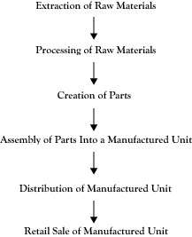

For many years, the field of microeconomics focused primarily on the relationship between firms and the outside environment of consumers, suppliers, competitors, and regulators. Internally, it was assumed that a firm was able to measure the costs associated with any pattern of exchanges with the outside environment in order to determine the best production and marketing decisions. However, the conduct of the actual processes involved in production was not regarded as an issue of economics in itself. Rather, these matters were treated as issues of organizational behavior and organizational design to best assign, coordinate, and motivate employees, much like a military unit.
In recent decades, economists have applied and developed economic principles that inform a better understanding of activity inside the firm. One focus in this newer endeavor is the firm’s decisions on which goods and services they will provide. A related topic of interest to economists is how much of the production activity will be done by the firm and how much will be purchased from other firms or contracted out to other businesses.
When a business elects to provide a large number of goods and services or has complex, multistage production operations, operations must be assigned to departments or divisions and the firm faces challenges in coordinating these units. Although organizational psychologists have addressed these issues for many years, economics has been able to provide some new insights.
Another issue in the design of a firm is motivation of units and individuals. In analyses based on organizational behavior, individuals are regarded as having psychological needs and the challenge to the organization is how to design procedures to meet those needs so that employees better support the needs of the organization. The new perspective from economics views an employee as an independent agent whose primary objective is to maximize his own welfare and the challenge to the organization is to structure incentives in a manner that aligns the economic interests of the firm with economic interests of the employee.
Businesses usually sell multiple products or services, and they alter the collection of goods and services provided over time. Several factors motivate changes in this composition and can result in decisions either to expand an enterprise by increasing the range of goods and services offered or to contract the enterprise by suspending production and sale of some goods and services. In this section, we will list some key motivations for expanding the range of an enterprise. Bear in mind that when these motivations are absent or reversed, the same considerations can lead to decisions to contract the range of the enterprise.
We noted earlier that many businesses sell goods or services that are intended to help other businesses in the creation of their goods and services. Many of the goods we consume as individuals are the result of a sequence of production operations that may involve several firms. If the final goods are traced backward through the intermediate goods that were acquired and utilized, we can usually envision the participant firms in a creation process as a network of production activities or a sequence of production stages.
For example, consider a loaf of bread purchased at a grocery store. The grocery store may purchase the loaf from a distributor of bakery products. The distributor likely purchased the loaf from a baking company. In order to produce the loaf of bread, the bakery would need flour and yeast, along with packaging material. These may be purchased from other businesses. The flour came from a grain grinding process that may have been done by a different business. The business that ground the grain would need grain that may have come from an agricultural cooperative, which in turn was the recipient of the grain from a farmer. In order to grow and harvest the grain, the farmer needs seed, tractors, and fuel, which are usually obtained from other sources.
Each of the firms or production operations that contributes to the creation of the final product can be considered as adding value to the resources they acquire in their completion of a stage of the creation process. Since the network of operations that account for the creation of a product can often be represented by a sequence of stages, the network is commonly called the value chainThe network of operations that account for the creation of a product. for the product.
Figure 5.1 "Generic Value Chain for a Manufactured Good" shows a generic value chain for a manufactured good. This value chain begins with the raw materials that eventually go into the product that must be acquired, possibly by mining (e.g., metal) or harvesting (e.g., wood). Next, the raw material is processed into a material that can be used to create parts in the next stage. Using these parts, the next stage of the value chain is the assembly of the product. Once assembled, the product must be distributed to the point of sale. In the final stage, a retailer sells the finished product to the consumer.
Business expansions are classified based on the relationship of the newly integrated activity to prior activities engaged in by the firm. If the new activity is in the same stage of that value chain or a similar value chain, the expansion is called horizontal integrationExpansion in which a business's new activity is in the same stage of its value chain or a similar value chain as its prior activities.. If the new activity is in the same value chain but at a different stage, the expansion is called vertical integrationExpansion in which a business's new activity is in the same value chain as its prior activities but at a different stage.. If the new activity is part of a quite different value chain, the new combined entity would be called a conglomerate mergerExpansion in which a business's new activity is part of a different value chain..
Figure 5.1 Generic Value Chain for a Manufactured Good
In horizontal integration, a firm either increases the volume of current production activities or expands to similar kinds of production activities. Consider a television manufacturer that operates at the assembly stage of its value chain. If that company bought out another manufacturer of television sets, this would be horizontal integration. If the company were to decide to assemble computer monitors, the product would be a form of horizontal integration due to the high similarity in the two products and type of activity within those value chains.
Cost efficiencies in the form of economies of scale from higher volumes or economies of scope from producing related products are primary driving factors in horizontal integration. When a firm expands to a new product that is similar to its current products, usually there is a transfer of knowledge and experience that allows the expanding firm to start with higher cost efficiency than a firm that is entering this market with no related experience. If an enterprise possesses core competencies in the form of production processes that it can perform as well or better than others in the market, and can identify other products that can employ those core competencies, the enterprise can enter new markets as a serious competitor.
Market power from holding a higher share of all sales in a market is the other major motivation for horizontal integration. As we will discuss in later chapters, the possible gains from increased market power are often so significant that the governments in charge of overseeing those markets may limit or forbid horizontal mergers where one company buys out or combines with a competitor.
Since most firms are buyers as well as sellers, horizontal integration can create an advantage for large firms in demanding lower prices for goods and services they purchase. For example, a national chain like Walmart may be the principal customer of one of its suppliers. If Walmart decides to use a different supplier, the former supplier may have difficulty remaining in business. Consequently, the supplier may have little choice about accepting reduced prices.
Vertical integration occurs when a firm expands into a different stage of a value chain in which it already operates. For example, suppose the television manufacturing firm had been purchasing the electronic circuit boards that it uses in its television set products but decides to either buy the supplier or start a new operation to make those parts for itself. This would be vertical integration.
Usually vertical integration will extend to a neighboring stage in the value chain. When a business expands into an earlier stage in the value chain, the business is said to be doing upstream integrationVertical expansion of business operations into an earlier stage of the value chain.. When the expansion is to a later stage of the value chain, the result is downstream integration Vertical expansion of business operations into a later stage of the value chain..
A major motivation for vertical integration is the potential for improved profitability. As noted earlier, firms at some stages of the value chain may enjoy better market conditions in terms of profitability and stability. If two stages of the value chain are performed by two divisions of the same company rather than by two separate companies, there is less haggling over price and other conditions of sale. In some cases, through a process that economists call double marginalizationA process through which a single vertically integrated firm can realize higher profit than two independent firms operating at different stages of the value chain and making exchanges.,A nice discussion of double marginalization appears in Shugart, Chappell, and Cottle (1994). it is possible that a single vertically integrated firm can realize higher profit than the total of two independent firms operating at different stages and making exchanges. An independent partner may not conduct its business the way that the firm would prefer, and possibly the only means to make sure other stages of the value chain operate as a firm would like is for the firm to actually manage the operations in those stages.
Another possible motivation for vertical integration is risk reduction. If a firm is highly dependent on the goods and services of a particular supplier or purchases by a particular buyer, the firm may find itself in jeopardy if that supplier or buyer were to suddenly decide to switch to other clients or cease operations. For example, if the supplier of electronic circuit boards were to cancel future agreements to sell parts to the television manufacturer and instead sell to a competitor that assembles television sets, the television company may not be able to respond quickly to the loss of supply and may decide it needs to either buy out the supplier or start its own electronic parts division. From the circuit board supplier’s perspective, there is also risk to them if they invest in production capacity to meet the specific part designs for the television company and then the television company decides to get the circuit boards elsewhere. By having both operations within the boundaries of a single enterprise, there is little risk of unilateral action by one producer to the detriment of the other producer.
If the reduction of risk related to the actions of an independent supplier or buyer is a motivation for vertical integration, the firm may have alternatives to formally integrating into another stage of the value chain through use of a carefully constructed agreement with a supplier or buyer. Done correctly, these agreements can result in some of the gains a business might expect from formal integration of the other stage of value-adding activity.
If the concern is about the reliability of continued exchanges, the supplier firm can establish a long-term agreement to be the exclusive dealer to the buyer firm, or the buyer firm can contract to be the exclusive buyer from the seller firm. In the retail business, these sometimes take the form of franchise outlets, where the franchise enjoys the assurance that their product will not be sold by a competitor within a certain distance and the supplier is assured of having a retailer that features their goods exclusively.
In some cases, the concern may be about future prices. If the upstream firm is concerned that the downstream firm will charge too little and hurt their profitability, the upstream firm can insist on a resale price maintenance clause. If the downstream firm is concerned that the upstream firm will use their exchanges to build up a business and then seek additional business with other downstream clients at lower prices, the downstream firm can ask for a best price policy that guarantees them the lowest price charged to any of the upstream firm’s customers.
Some upstream suppliers may produce a variety of goods and rely on downstream distributors to sell these goods to consumers. However, the downstream firm may find that selling just a portion of the upstream firm’s product line is more lucrative and will not willingly distribute the upstream firm’s entire line of products. If this is a concern to the upstream firm, it can insist on the composition of products a distributor will offer as a condition of being a distributor of any of its products.
One way firms protect themselves from supply shortages is by maintaining sizeable inventories of parts. However, maintaining inventory costs money. Firms that exchange goods in a value chain can reduce the need for large inventories with coordinated schedules like just-in-time systems.The best-selling book by Womack, Jones, and Roos (1990) describes the just-in-time philosophy. In situations where quality of the good is of key concern, and not just the price, the downstream firm can require documentation of quality control processes in the upstream firm.
When upstream firms are concerned that they may not realize a sufficient volume of exchanges over time to justify the investment in fixed assets, the upstream firm can demand a take-or-pay contract that obligates the buyer to either fulfill its intended purchases or compensate the supplier to offset losses that will occur. This type of agreement is particularly important in the case of “specific assets” in economics, where the supplier would have no viable alternative for redeploying the fixed assets to another use.
Although some of these measures may obviate the need for a firm to expand vertically in a value chain, in some circumstances forming the necessary agreements is difficult to accomplish. This is especially the case when one party in a vertical arrangement maintains private information that can be used to its advantage to create a better deal for itself but potentially will be a bad arrangement for the party that does not have that information in advance. As a result, parties that are aware of their limited information about the other party will tend to be more conservative in their agreement terms by assuming pessimistic circumstances and will not be able to reach an agreement. This reaction is called adverse selectionThe tendency of one party to a potential agreement to assume pessimistic circumstances and hold to conservative agreement terms when it is aware that it has limited information about the other party. in economic literature.Nobel laureate George Akerlof (1970) wrote a seminal paper examining adverse selection in the context of used cars.
In some cases, one party in a vertical arrangement may have production or planning secrets that do not affect the agreement per se but risk being discovered by the other party as the result of any exchange transactions. These secrets may be the result of costly research and development but may pass to the other party at essentially no cost, and the other party may take advantage of that easily obtained information. This is a version of what economists call the free rider problem.See the text by Brickley, Smith, and Zimmerman (2001) for more about the free rider problem in economics of organizations. Due to the difficulty of protecting against problems of adverse selection and free riders, firms may conclude that vertical integration is the better option.
As stated earlier, a conglomerate is a business enterprise that participates in multiple value chains that are different in nature. An example of a conglomerate is General Electric, which engages in the manufacture of appliances, construction of energy facilities, financing of projects, and media ventures, just to name a portion of its product portfolio.
One attraction of conglomerates is the ability to diversify so that the firm can withstand difficult times in one industry by having a presence in other kinds of markets. Beyond diversification, a conglomerate can move capital from one of its businesses to another business without the cost and difficulties of using outside capital markets. Often conglomerates will have some divisions that are cash cows in being profitable operations in mature markets, and other businesses that have great potential but require sizeable investment that can be funded by profits from the cash-cow businesses.The concept of cash-cow businesses is an aspect of the Boston Consulting Group matrix for corporate strategy (1970).
Another argument for conglomerates is that companies with very talented management staffs may be capable of excelling in more than one type of business. For instance, the former chairman of General Electric, Jack Welch, was widely praised as providing superior senior management for the wide range of businesses in which General Electric participated.
We have discussed several reasons a firm may decide to expand. At first glance, it may seem that expanding a business is often a good idea and has little downside risk if the larger enterprise is managed properly. In fact, during the last century successful businesses often engaged in horizontal and vertical integration and even became conglomerates due to such reasoning.
However, as many of these large corporations learned, it is possible to become too large, too complex, or too diversified. One consequence of a corporation growing large and complex is that it needs a management structure that is large and complex. There needs to be some specialization among managers, much as there is specialization in its labor force. Each manager only understands a small piece of the corporation’s operations, so there needs to be efficient communication between managers to be able to take advantage of the opportunities of integration and conglomeration. This requires additional management to manage the managers.
Large firms usually have some form of layered or pyramid management both to allow specialization of management and to facilitate communication. Still, as the number of layers increases, the complexity of communication grows faster than the size of the management staff. Information overload results in the failure of key information to arrive to the right person at the right time. In effect, at some point the firm can experience diseconomies of scale and diseconomies of scope as the result of management complexity increasing faster than the rate of growth in the overall enterprise.
Another problem with expansion, especially in the cases of vertical integration and conglomerates, is that different kinds of businesses may do better with different styles of management. The culture of a successful manufacturer of consumer goods is not necessarily the culture of a startup software company. When many kinds of businesses are part of the same corporation, it may be difficult to synchronize different business cultures.
Economists have developed a theory called transaction cost economicsA theory that explains when a firm should expand, not expand, break apart, or sell off business units based on the costs involved in making exchanges. to try to explain when a firm should expand and when it should not, or even when the firm would do better to either break apart or sell off some of its business units. A transaction cost is the cost involved in making an exchange. An exchange can be external or internal. An external exchange occurs when two separate businesses are involved, like the television manufacturer and its parts supplier in the earlier example. Prior to the actual exchange of parts for cash, there is a period in which the companies need to come to agreement on price and other terms. The external transaction costs are the costs to create and monitor this agreement.
If a firm decides to expand its boundaries to handle the exchange internally, there are new internal transaction costs. These would be the costs to plan and coordinate these internal exchanges. If exchanges of this nature have not been done before, these internal transaction costs can be significant.
Nobel Prize laureate Ronald Coase introduced the concept of transaction costs and also proposed a principle for determining when to expand known as the Coase hypothesis.The initial article that stimulated later development of the transaction cost concept was by Ronald Coase (1937). Essentially, the principle states that firms should continue to expand as long as internal transaction costs are less than external transaction costs for the same kind of exchange.
One internal transaction cost in multiple-division companies is how to coordinate the divisions that make internal exchanges so they will achieve what is best for the overall corporation. This challenge is not merely a matter of communication but of providing proper motivation for the individual units.
Large vertically integrated companies often have at least one upstream division that creates a product and a downstream division that distributes it or sells it to consumers. One design for such companies is to have a central upper management that decides what activities and activity levels should be provided by each division. These instructions are given to the division managers. With the output goals of each division established, each division will best contribute to the overall profitability of the corporation by trying to meet its output goals at minimum cost. As such, divisions operating under this philosophy are called cost centers.
Although the cost center design may sound workable in principle, there is some risk in the division having an overall objective of minimizing cost and divisional management evaluated in terms of that objective. The response to this objective is that the firm may cut corners on quality as much as possible and avoid considering innovations that would incur higher initial costs but ultimately result in a better product for the long run. Unless the top-level management is aware of these issues and sets quality requirements properly, opportunities may be missed.
Another problem with cost centers, particularly in the nonprofit and public sectors, is that the compensation and prestige afforded to division managers may be related to the size of division operations. Consequently, the incentive for managers is to try to justify larger cost budgets rather than limit costs.
An alternative to the cost center approach is to treat a division as if it were like a business that had its own revenues and costs. The goal of each division is to create the most value in terms of the difference between its revenues and costs. This is known as a profit center. Division managers of profit centers not only have incentives to avoid waste and improve efficiencies like cost centers but also have an incentive to improve the product in ways that create better value.
The profit center model treats a corporate division as if it were an autonomous business within a business. However, often the reason for having multiple divisions in an enterprise is because there is vertical integration, meaning that some divisions are providing goods and services to other divisions in the enterprise. If the two divisions in an exchange are to be treated as if they were separate businesses, what price should be charged by the supplying division? Even if there is no actual cash being tendered by the acquiring division, some measurement of value for the exchange is needed to serve as the revenue for the selling division and the cost for the acquiring division. The established value assigned to the exchanged item is called a transfer priceThe established value assigned to an item exchanged between a selling division and an acquiring division of the same corporation..
One possibility for establishing a transfer price is for the two divisions to negotiate a price as they would if they were indeed independent businesses. Unfortunately, this approach sacrifices one of the benefits of vertical integration—namely, the avoidance of the transaction costs that are incurred on external changes—without avoiding all the internal transaction costs.
Another approach to the problem of pricing interdivision exchanges is to base prices on principles rather than negotiation. Academic research has concluded a number of principles for different kinds of situations. In this section, we will limit our consideration to two of these situations.
Suppose two divisions in an enterprise, Division A and Division B, exchange a good that is only produced by Division A. More specifically, there is no other division either inside or outside the enterprise that currently produces the good. Division B is the only user of this good, either inside or outside of the enterprise. Under these conditions, theoretically the best transfer price is the marginal cost of the good incurred by Division A.
No formal proof of this principle will be offered here, but a brief defense of this principle would be as follows: Suppose the price charged was less than the marginal cost. If Division A decides on the production volume that would maximize its internal divisional profit, then by reducing its volume somewhat, Division A would avoid more cost than it loses in forgone transfer revenue. So Division A would elect to provide fewer units than Division B would want.
On the other hand, suppose the transfer price was set at a level higher than the marginal cost. Since the transfer cost becomes a component of cost to receiving Division B, in determining its optimal volume of production, Division B will see a higher marginal cost than is actually the case (or would be the case if Divisions A and B functioned as a single unit). As a result, Division B may decide on a production level that is not optimal for the overall enterprise. By setting the transfer price equal to Division A’s marginal cost, the decision by Division B should be the same as it would be if the two divisions operated as one.
Although the principle is reasonably clear and defensible in theory, the participating divisions in an actual setting may raise objections. If the average cost of the item to Division A is less than the marginal cost, Division B may complain that they should not need to pay a transfer price above the average cost because that is what the actual cost per item is to Division A and the enterprise overall. If the average cost per item exceeds the marginal cost, Division A may complain that setting the transfer price to the marginal cost requires their division to operate at a loss for this item and they should be credited with at least the average cost. Nonetheless, the best decisions by Divisions A and B for the overall profit of the enterprise will occur when the transfer price is based on the marginal cost to Division A in this situation.
As a second case situation, suppose the good transferred from Division A to Division B is a good that is both produced and consumed outside the enterprise and there is a highly competitive market for both buyers and sellers. In this instance the best internal transfer price between Division A and Division B would be the external market price.
A supporting argument for this principle is this: If the transfer price were higher than the outside market price, Division B could reduce its costs by purchasing the good in the outside market rather than obtaining it from Division A. If the outside market price were higher than the set transfer price, Division A would make higher divisional profit by selling the good on the outside market than by transferring it to Division B.
Earlier we considered how to motivate divisions within a large organization with appropriate transfer pricing. How about motivation within the divisions? As noted in the introduction to this chapter, in recent decades economists have addressed this matter from a new perspective.
The traditional approach to motivation inside a division or modest-sized business was typically regarded as matters of organizational design and organizational behavior. Once the employee agreed to employment in return for salary or wages and benefits, his services were subject to direction by management within the scope of human resource policies in terms of hours worked and work conditions. Ensuring good performance by employees was basically a matter of appropriate supervision, encouragement, and feedback. In cases where employees were not performing adequately, they would be notified of the problem, possibly disciplined, or even dismissed and replaced. From this perspective, managing employees is much like managing military troops, differing largely in terms of the degree of control on the individual’s free time and movements.
The new perspective on employee motivation is to consider the employee more like an individual contractor rather than an enlisted soldier. Just as microeconomics viewed each consumer as an entity trying to maximize the utility for his household, an individual employee is a decision-making unit who agrees to an employment relationship if he believes this is the best utilization of his productive abilities. The challenge for business management is to structure compensation, incentives, and personnel policies that induce employees to contribute near their productive capacities but not overreward employees beyond what makes economic sense for the business.
One contribution from this economic perspective is the notion of an efficiency wageAn incentive to induce an employee to be productive and retain his or her job that is based on a value somewhat above the employee's marginal revenue product..See Milgrom and Roberts (1992). The classical approach to setting wages is that the wage paid to an employee should be no more than the marginal revenue product corresponding to her effort. However, if an employee is paid barely what her efforts are worth to the firm at the margin and if there is a competitive market for the employee’s services in other firms, the employee may not be motivated to work at maximum capacity or avoid engaging in behaviors that are detrimental to the firm because she can earn as much elsewhere if she is dismissed. An efficiency wage is a wage that is set somewhat above the marginal revenue product of the employee to give the employee an incentive to be productive and retain this job because the employee would sacrifice the difference between the efficiency wage and marginal revenue product if she sought employment elsewhere. This incentive is worthwhile to the firm because it avoids the transaction costs of finding and hiring a new employee.
Another contribution of this economic viewpoint of employee motivation is an examination of employee contracts to deal with what is called the principal-agent problemThe situation that results when an employer is not able to monitor all of an employee's actions and thus has insufficient information about whether an employee takes actions that are not necessarily what the employer would want.. In this context, the hiring business is a principal that hires an employee (agent) to act on its behalf. The problem occurs when the agent is motivated to take actions that are not necessarily what the employer would want, but the employer is not able to monitor all the activities of the employee and has insufficient information.
In the employment relationship the employer evaluates the employee on the basis of her contribution to profit or other objective of the firm. However, the employee evaluates her activities based on the amount of effort involved. To the degree that employees see their compensation and incentives connected to the intensity of effort, the more likely the employee will invest additional effort because there is reduced risk that her efforts will go unrewarded.
For example, if employee incentives are based on the overall performance of a team of employees without any discrimination between individual employees, there is an incentive for employees to shirk in performance of their jobs because they still benefit if others do the work and they do not risk putting in an extra effort to see the reward diminished by sharing the incentives with others who did not put in the same effort. The informativeness principleThe suggestion that measures of performance that reflect individual employee effort be included in employee contracts. suggests that measures of performance that reflect individual employee effort be included in employee contracts.A good description of the informativeness principle appears in Samuelson and Marks (2010).
A third interesting contribution of this perspective on employee motivation is the concept of signalingObservable actions that a potential employee takes that help distinguish him or her as a high-quality worker..Nobel laureate Michael Spence (1974) introduced the economics of signaling. When employers hire, they face a pool of possible employees. Some employees will perform well, whereas others will not due to either lack of skills or lack of character. In the interview process, the employer will try to assess which applicants will be good employees, but these evaluation processes are imperfect. The real intentions of the applicant if and when he becomes an employee are largely private information until the person is actually hired and on the job for a while. As a result, employers face an adverse selection problem similar to what was discussed earlier in the context of vertical integration and will often protect against the risk by lowering the compensation offered, even though they would be willing to pay a motivated, qualified employee more.
One response to the adverse selection problem by the employee is to take actions on his own that will help distinguish him from others in the applicant pool, which are observable and serve as a signal to the employer. Seeking a college degree has been cited as a kind of signal. Even though much of what the employee learned as part of obtaining the college degree may be of little use in the prospective employment relationship, the fact that the applicant was willing to endure the cost and effort for a college degree, particularly a degree supported with good grades, is evidence that the applicant is more likely to be a dedicated and competent employee.
Applicants for employment or hire often have several employment relationships over time. By attaching importance to reputation, employers can both motivate employees to be more diligent in their current positions and establish a mechanism to help distinguish high-quality workers from low-quality workers in future hiring.
In businesses where the manager is not the owner, there is another manifestation of the principal-agent problem. For example, in a typical corporation, the owners are stockholders, many of whom are not involved in the actual production activities. The board of directors hires executive management to act as the agents of the shareholders, who are the principals in this context. The intent of the arrangement is that the executives will manage the corporation in the best long-term interests of the shareholders. However, the executives, though they may own some of the corporation’s shares, are largely rewarded via salaries, bonuses, and other perquisites. Structuring executive contracts that both motivate the executive and represent the owners’ interests is a challenge.
The executives in corporations are often paid highly, certainly well above the opportunity cost of their labor in a nonexecutive setting. There are multiple theories for these high executive salaries. One argument is based on economic rent, namely, that talented executives are like star athletes and art performers, being in relatively short supply, so corporations must pay well above their opportunity cost to have their services.
Another argument for high executive pay is that they need to be not only compensated for their effort but rewarded for the value they create on behalf of the owners. So part of the higher salary is a share of the profits resulting from their execution of management duties.
A third argument for high executive salaries is that firms must often take significant risks to succeed in competitive markets and uncertain conditions. If the firm fails or falls short when its performance is assessed after the fact, the executive may lose his job. In response to this, the executive may avoid bold moves that have a significant risk of failure. In paying an executive highly, the executive is compensated for the additional personal risk he assumes by being willing to take reasonable chances that the corporation must tolerate.
Another interesting argument for high executive pay is called tournament theoryThe idea that paying a CEO well beyond what is justifiable on the basis of the individual's contributions creates an incentive for other executives on the team to put in extra effort in order to have a chance at similar rewards in the future..See Milgrom and Roberts (1992). This applies to large enterprises with a sizeable team of executives, with a highly paid chief executive officer (CEO), along with several other vice presidents who are in line for consideration to become a future CEO. By paying the CEO generously and well beyond what is economically justifiable on the basis of the CEO’s contributions per se, there is a strong incentive for the other executives to put in extra effort so they will become that chief executive, with all the high pay and perquisites, in the future. From the perspective of the shareholders, the gain from those collective extra efforts is worth the high salary to the last winner of the CEO “tournament.”